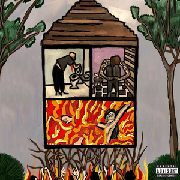

Long Term Effects of SUFFERING

Long Term Effects of SUFFERING is the sophomore studio album from New Orleans duo $UICIDEBOY$. The album—which serves as the follow-up to their 2020 release Stop Staring at the Shadows—features mixing from Louisiana producer and engineer Sambo Bachrack.